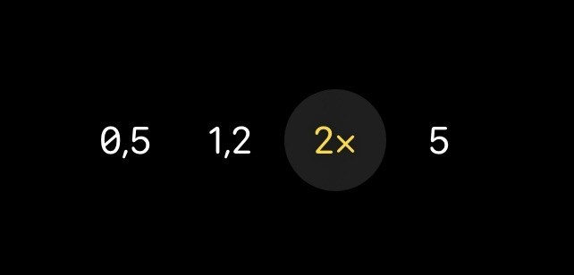
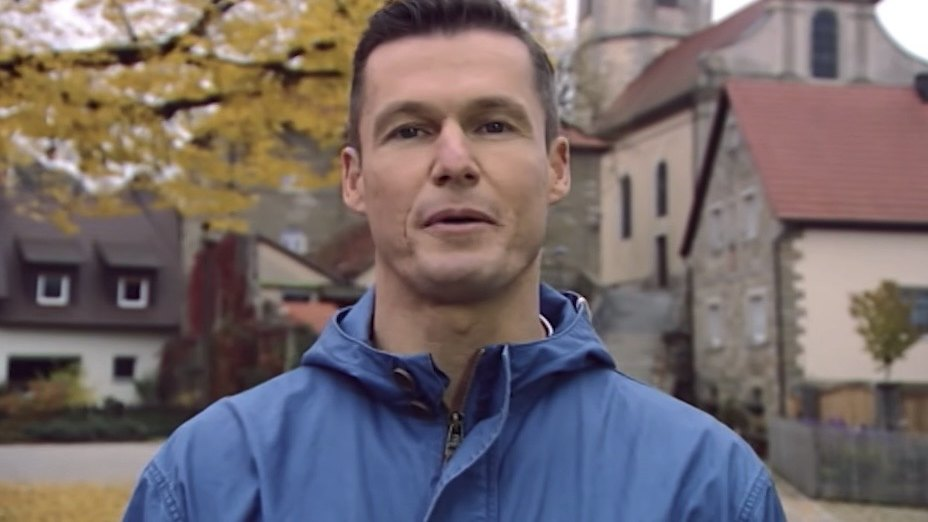
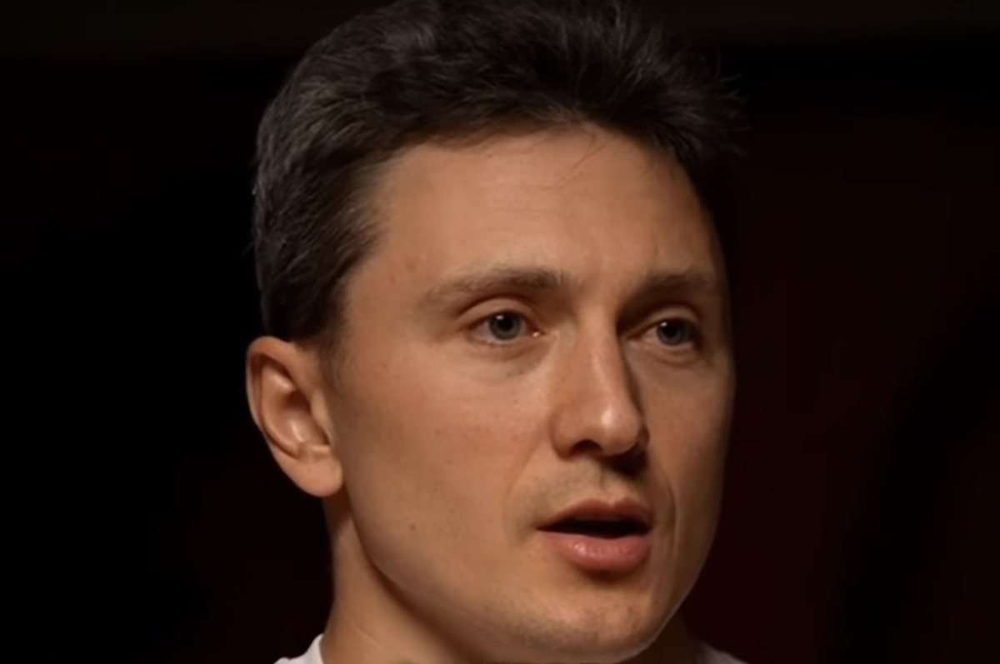

English
English Français
Français Italiano
Italiano العربية
العربية ქართული
ქართული Türkçe
Türkçe Español
Españolلكل رياضي في LPAL 4
فيديو التعريف بك
قبل دخولك إلى الحلبة في كولونيا، سيُعرض فيلم قصير عنك على الشاشة الكبيرة في القاعة وبثًّا مباشرًا على KICK. معظم المشاهدين لم يسمعوا اسمك من قبل. بعد مشاهدة الفيلم يجب أن يعرفوا من أنت، وماذا تعمل، ولماذا عليهم أن يشجعوك.
أنت تصوّر، ونحن نقوم بالمونتاج. هذه الصفحة تشرح لك بالضبط ماذا تصوّر وكيف.
قبل أن تضغط على التسجيل
إعدادات الكاميرا
هذه الإعدادات نفسها لكل الأجزاء. الصوت السيئ أو الفيديو العمودي لا يمكن إصلاحه لاحقًا، لذلك تحقّق منها قبل كل تسجيل.
آيفون: الإعدادات ← الكاميرا ← تسجيل الفيديو ← 4K بسرعة 30 fps. أندرويد: في تطبيق الكاميرا افتح إعدادات الفيديو واختر 4K / UHD، 30 fps. أو استخدم كاميرا إن كانت لديك.
في الهاتف استخدم الكاميرا الخلفية واضبط الزوم على 2×: اضغط على 2× في تطبيق الكاميرا، كما في الصورة. في الكاميرا استخدم عدسة بحوالي 30 مم. بدون كاميرا السيلفي، بدون فلاتر، بدون وضع التجميل، بدون موسيقى.

في الأجزاء التي تتكلم فيها، ضع الهاتف على حامل ثلاثي أو أسنده إلى كتب أو رف بمستوى العينين. لا مقابلات مهتزّة باليد.
غرفة هادئة. أطفئ التلفاز والموسيقى والمراوح والغسالة. الهاتف على بعد مترين منك كحدّ أقصى، أو استخدم ميكروفون مشبك إن كان لديك.
يأتي الضوء من الجانب أو من الأمام (نافذة أو مصباح). لا تجلس أبدًا ونافذة مضيئة خلفك.
امسح عدسة الكاميرا بقميص قبل أن تبدأ. العدسة المتسخة تجعل كل شيء ضبابيًا.
اضغط مطوّلًا على وجهك (أو على الموضوع الرئيسي) في الشاشة حتى يظهر «قفل AE/AF»، حتى لا تتغير الصورة أثناء كلامك.
انتظر 3 ثوانٍ بعد بدء التسجيل قبل أن تتكلم، و3 ثوانٍ في النهاية. قل الجمل المهمة 2–3 مرات. مادة أكثر = مونتاج أفضل.
الأفضل أن يكون الفيديو كله بالإنجليزية. الجزء 1 يجب أن يكون بالإنجليزية. إذا كانت إنجليزيتك لا تكفي لباقي الأجزاء، تكلّم بلغتك، لكن ببطء ووضوح، حتى نتمكن من الترجمة بسهولة.
قميص Lion Pride إن كان لديك. وإلا قميص عادي بلون واحد داكن (أسود، رمادي داكن، كحلي). شعار صغير مثل Nike أو Adidas لا بأس به. بدون طباعة كبيرة أو كتابة.
الجزء 1 · بالإنجليزية
من أنت
هذه بداية فيلمك. تنظر مباشرة إلى عدسة الكاميرا (وليس إلى الشاشة) وتعرّف بنفسك بالإنجليزية: اسمك، أكبر إنجازاتك في مصارعة الذراعين، ومن ستواجه في LPAL 4. هذا الجزء يجب أن يكون بالإنجليزية، حتى لو تكلمت بلغتك في الأجزاء الأخرى. قل النص التالي بالإنجليزية.
My name is [first and last name]. I'm from [city, country]. I'm [your biggest title, e.g. a multiple-time national champion] in armwrestling, and I'm coming to Cologne, Germany, to compete against [opponent] at LPAL 4.
- اذكر أفضل ألقابك: بطولات وطنية أو أوروبية أو عالمية، كؤوس العالم والبطولات الكبرى. إذا كانت هناك فيديوهات لهذه البطولات، اذكرها وأرسل لنا الروابط عبر واتساب (انظر آخر هذه الصفحة).
- قلها 4–5 مرات: بهدوء، ثم بطاقة أكبر. نحن نختار أفضل لقطة.
- احفظها عن ظهر قلب حتى لا تقرأها. اللكنة ليست مشكلة إطلاقًا.

✓ العينان مباشرة في العدسة
الجزء 2 · المقابلة
قصتك
هذا قلب الفيلم. تخيّل أن لا أحد يعرف من أنت. احكِ قصتك: من أين أنت، ماذا تفعل كل يوم، وكيف أصبحت مصارع ذراعين. شخص ما (صديق، شريك حياتك، أحد أفراد العائلة) يجلس بجانب الكاميرا ويطرح عليك الأسئلة. أنت تنظر إلى هذا الشخص، وليس إلى العدسة.

✓ العينان على المُحاوِر
✗ ليس على الهاتف / الكاميرا
كيف تحصل على خلفية سوداء
- صوّر في المساء، أو أغلق الستائر.
- أطفئ ضوء السقف. استخدم مصباحًا واحدًا أو نافذة من جهة واحدة فقط.
- اجلس بعيدًا عن الجدار (1.5 متر أو أكثر)، حتى تبقى الخلفية مظلمة.
- البس قميصًا داكنًا بلون واحد (انظر «ماذا تلبس» في الأعلى).
الأسئلة
المُحاوِر يقرأ الأسئلة بصوت عالٍ. أجب بجمل كاملة تُفهم حتى بدون السؤال («أعمل نجّارًا في…»، وليس فقط «نجّار.»). الأفضل بالإنجليزية؛ وإن لم تستطع، تكلّم بلغتك ببطء ووضوح. خذ وقتك؛ 10–15 دقيقة من الكلام ممتازة.
- من أنت؟ من أين أنت، وأين تعيش الآن؟
- ما هو عملك أو دراستك؟ كيف يبدو عملك بالضبط؟
- صِف يومًا عاديًا من أيامك، من لحظة استيقاظك حتى تنام.
- كيف ومتى بدأت مصارعة الذراعين؟ من أدخلك إلى هذه الرياضة؟
- ما هي أكبر انتصاراتك؟ اذكر البطولة والسنة (سنبحث نحن عن اللقطات).
- ما هي أصعب هزيمة أو أصعب لحظة مررت بها، وماذا تعلّمت منها؟
- ما الشيء الذي لن يخمّنه الناس عنك أبدًا؟ العائلة، الأطفال، الحيوانات، رياضات أخرى، هوايات، قصة مضحكة.
- ماذا تعني لك مصارعة الذراعين؟ لماذا تمارسها؟
الجزء 3 · لا حاجة للكلام
يومك
بينما تحكي قصتك، نحن نعرض حياتك. اطلب من صديق أو زميل أن يصوّرك خلال يوم عادي: في العمل أو المدرسة، في الطريق، في البيت. لا تنظر إلى الكاميرا، افعل فقط ما تفعله دائمًا.
- كل مقطع 10–30 ثانية، الكاميرا ثابتة أو تتحرك ببطء. صوّر كل شيء من 2–3 زوايا مختلفة.
- على الأقل 5–10 مقاطع من العمل أو الدراسة. إذا لم تستطع التصوير في العمل، صوّر المبنى من الخارج، ملابس العمل، أدواتك، الطريق إلى هناك.
- البيت ووقت الفراغ أيضًا: الطبخ، الأطفال، الحيوانات، رياضات أخرى، سيارتك، كل ما يعبّر «عنك».
الجزء 4 · في النادي
التدريب
أظهر مدى جدّيتك في العمل. صوّر 3–4 من تمارينك المعتادة في مصارعة الذراعين والسبارينغ على الطاولة مع شركائك في التدريب. كل تمرين من عدة زوايا: بعضها قريب جدًا، وبعضها من بعيد.
أمثلة من فعاليات LPAL. في النادي الأمر نفسه.
- كل تمرين: مقطع قريب، ومقطع متوسط، ومقطع واسع. المقاطع 10–30 ثانية.
- السبارينغ: صوّر من جانب الطاولة، ومن خلف منافسك (وجهك نحو الكاميرا)، وقريبًا جدًا من اليدين.
- إضافي: وضع المغنيسيوم، الأربطة/الأحزمة، الدخول إلى النادي، صرخة بعد مجموعة ثقيلة. الأصوات الحقيقية مرحّب بها.
- الهاتف أفقي، على حامل ثلاثي أو ممسوك بثبات باليدين. الإضاءة القوية في النادي تساعد.
الجزء 5 · نفس إعداد الجزء 2
النزال
الآن تحدّث عن نزالك في LPAL 4. كن واثقًا من نفسك وكن على طبيعتك. الاحترام جيد، وقليل من الكلام الاستفزازي لا بأس به، لكن بدون إهانات للعائلة أو البلد أو الدين.
الأسئلة
- من هو منافسك في LPAL 4، وماذا تعرف عنه / عنها؟
- في ماذا منافسك قوي؟ وأين نقطة ضعفه؟
- كيف ستفوز بهذا النزال؟ (لا داعي لكشف أسرار، فقط إحساسك.)
- كيف تستعد لهذا النزال؟
- ماذا يعني لك أن تنافس على مسرح كبير في كولونيا، بثًّا مباشرًا على KICK؟
ثم انظر إلى العدسة واختم بجملة قوية. بعض الأفكار، قلها بكلماتك الخاصة:
«[المنافس]، أحترمك، لكن في 9 يناير في كولونيا الفوز سيبقى معي.»
«لم أتدرّب بهذه القوة لكي أخسر. نلتقي على الطاولة في كولونيا.»
«[المنافس]، استعدّ لأصعب نزال في حياتك.»
«[المنافس]، ستشعر بقوة لم تشعر بها من قبل.»
«[المنافس]، و[بلدك] خلفي، لا أحد يستطيع إيقافي. استعدّ للخسارة.»
الجزء 6 · شخص آخر يتحدث عنك
شريكك في التدريب
اختر شريكًا واحدًا في التدريب (أو مدرّبك) يعرفك جيدًا. هو أو هي يتحدث عنك: كم تتدرّب بجدّ، منذ متى تعرفان بعضكما، ولماذا ستفوز. أثناء كلامه نعرض لقطات تدريبك ونزالاتك.
اسمي [الاسم]، أنا شريك [الرياضي] في التدريب. نعرف بعضنا منذ [العدد] سنوات ونتدرّب معًا [كم مرة].
ثم يجيب عن
- كم يتدرّب [الرياضي] بجدّ؟ احكِ قصة من التدريب.
- ما الذي يجعله / يجعلها خطيرًا على الطاولة؟
- كيف هو / هي خارج النادي؟
- لماذا سيهزم [المنافس] في كولونيا؟
كيف تصوّره
- مثل الجزء 2: الشريك ينظر إلى الشخص الذي يسأل، بجانب الكاميرا، وليس إلى العدسة.
- صوّره في النادي (طاولة أو أوزان في الخلفية فكرة ممتازة)، أو في البيت بخلفية داكنة.
- لحظة هادئة: بدون موسيقى في النادي أثناء التسجيل.
- الهاتف أفقي، على حامل ثلاثي، عدسة 2×، على بعد 1.5–2 متر تقريبًا.
إضافي · ما لديك مسبقًا
أرشيفك
المواد القديمة تجعل القصة حقيقية. أرسل كل ما لديك:
- فيديوهات أهم نزالاتك وبطولاتك: ارفع الملفات إلى مجلدك. روابط يوتيوب وإنستغرام: أرسلها عبر واتساب (انظر آخر هذه الصفحة).
- صور مع الميداليات والكؤوس والأحزمة، وعلى منصة التتويج.
- صور الطفولة، أول بطولة لك، صور تدريب قديمة.
- صور من العمل أو الدراسة إذا لم تستطع التصوير هناك.
قائمة التحقق
قبل الرفع
ضع علامة على ما لديك. هذه القائمة تُحفظ على هاتفك فقط.
ارفع
أرسل لنا فيديوهاتك
آخر موعد: الأحد 6 ديسمبر 2026
Part1_Intro_take2.mov، Part4_Training_sparring.mp4.افتح المجلد الذي يحمل اسمك.
مهم جدًا
روابط نزالاتك عبر واتساب
أرسل لنا كل روابط يوتيوب وإنستغرام لنزالاتك عبر واتساب. كل فيديو مهم.
- بث مباشر طويل، مثلًا من بطولة العالم أو بطولة أوروبا؟ اكتب الوقت الدقيق الذي تنافس فيه، مثلًا
European Championship 2025 – 3:42:10. - لا تسجّل الشاشة على هاتفك لإرسال الفيديوهات. الجودة تضيع. أرسل الرابط.
ضع علامة على «الروابط» في القائمة فقط بعد إرسالها.
أسئلة؟ راسلنا عبر واتساب أو على business@lionpride-armwrestling.com.